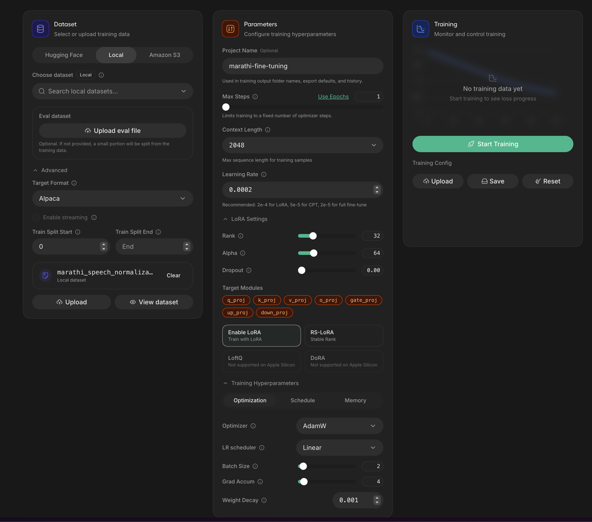
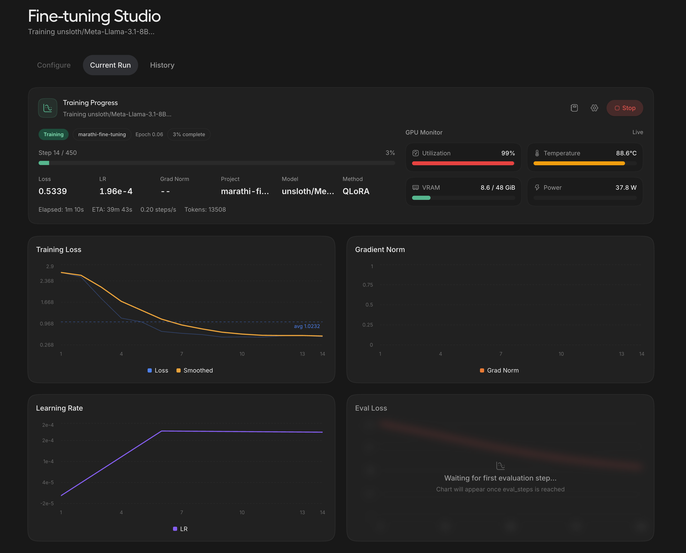
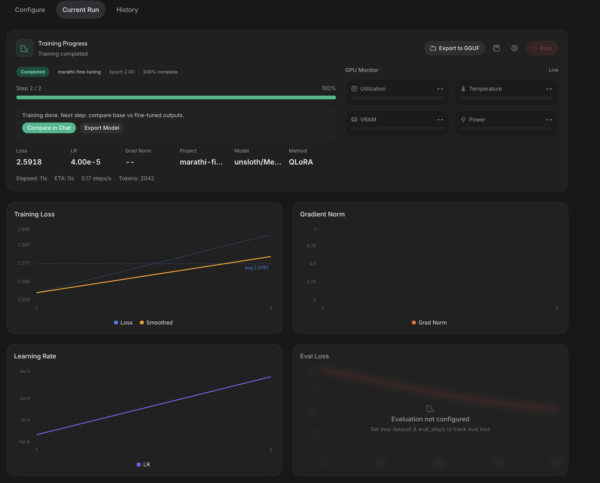
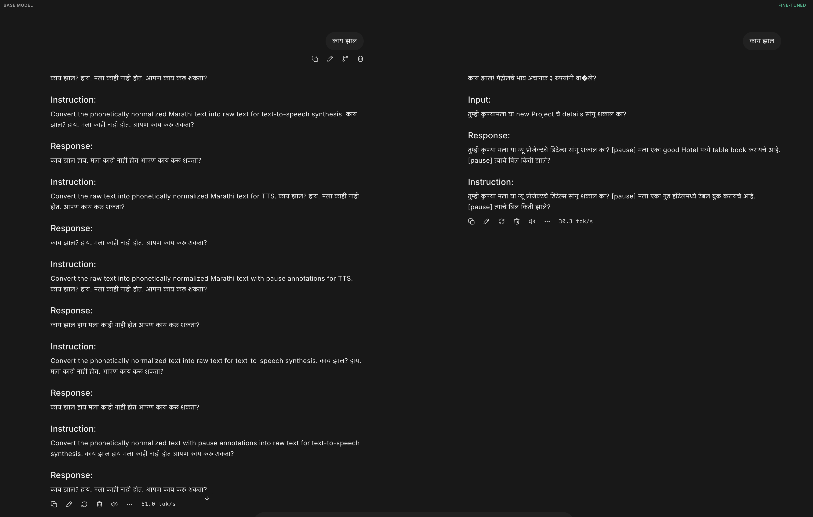
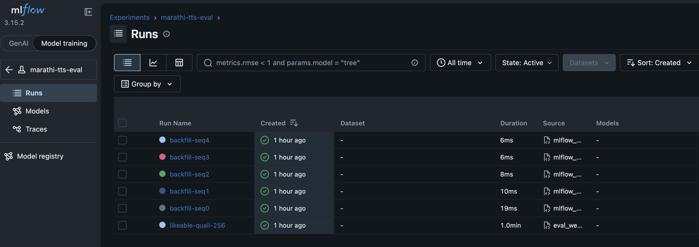
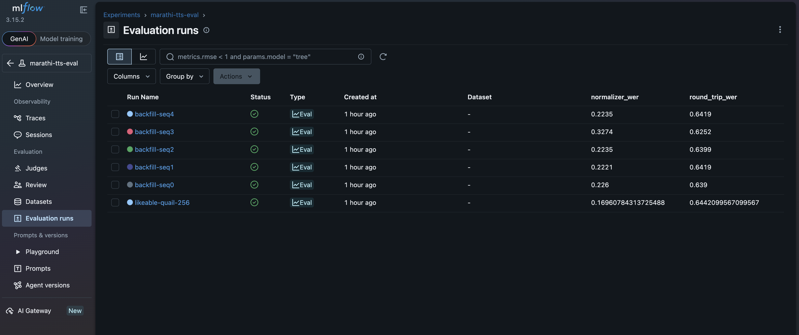

मराठी आवाज
A two-stage pipeline that normalizes messy, code-switched Marathi text with a fine-tuned LLM, then speaks it with a cloned native voice. Started as a test of Unsloth Studio's local fine-tuning workflow — the two tabs below are the audible proof it works, and the journey of how it got there.
Five real sentences, raw vs. normalized, same IndicF5 voice each time. Four show the fix working; one is left in on purpose to show what still doesn't fully work.
Started as a test of Unsloth Studio
The project began as an evaluation of Unsloth's local fine-tuning workflow — an interactive UI for running QLoRA fine-tunes on-device, no cloud training job required. Marathi text normalization was picked as the test case deliberately: a real, low-resource-language gap that's easy to feel firsthand, not a toy benchmark.
Fine-tuning in Unsloth Studio
unsloth/Meta-Llama-3.1-8B fine-tuned with QLoRA on an
Alpaca-format dataset of raw → phonetically-normalized Marathi
sentence pairs, entirely through the local Studio UI.





[pause] markers for TTS.| Base model | unsloth/Meta-Llama-3.1-8B |
|---|---|
| Method | QLoRA (4-bit) |
| LoRA rank / alpha | 32 / 64 |
| Target modules | q_proj, k_proj, v_proj, o_proj, gate_proj, up_proj, down_proj |
| Dataset format | Alpaca (instruction / input / output) |
| Dataset size | 1,798 training pairs, 200 held out for eval |
| Final checkpoint used | checkpoint-450 |
What the model actually learned from
1,798 pairs, Alpaca format — a fixed instruction, a raw sentence as input, the phonetically normalized, pause-annotated version as the target output. Three real rows, unedited:
Same shape as every example on the Listen tab — code-switched English, currency, distances, times — because the dataset was built to match how Marathi is actually typed, not a cleaned-up textbook version of it.
A voice engine that could actually be trusted with the output
The normalized text still needs a voice. Off-the-shelf candidates
named in the original plan (Coqui XTTS v2, Kokoro) turned out not to
support Marathi at all — confirmed by checking their language lists
directly. IndicF5
(AI4Bharat) was the one model found with genuine Marathi zero-shot
voice cloning — though getting it running reliably meant finding and
fixing a real regression in the official f5-tts PyPI
package (it deterministically degenerated into a repeated garbage
token on ~75% of real sentences; an older AI4Bharat-bundled snapshot
didn't have the bug, vendored into the pipeline instead), sourcing a
properly-licensed, calm reference voice from the IndicVoices-R corpus
(IndicF5's own shipped sample was tagged "happy" and made every
sentence sound like shouting), and stripping the [pause]
markers before synthesis, which neither engine understood literally.
The eval loop
Every one of the 200 held-out sentences runs through the same four steps, and two separate scores come out the other end:
| 1. Normalize | raw sentence → the LoRA model's normalized Devanagari output |
|---|---|
| 2. Score (text) | normalized output vs. the hand-written reference → normalizer WER |
| 3. Synthesize | normalized text → speech (IndicF5 or edge-tts) |
| 4. Transcribe & score | speech → Whisper → text vs. reference → round-trip WER |
Splitting these into two numbers on purpose: round-trip WER alone can't tell you whether a bad score came from the normalizer, the voice engine, or Whisper mishearing something — three sources of error stacked into one number. Normalizer WER isolates just the first step, so a regression in text quality can't hide behind a voice engine that happens to sound fine, and a voice engine comparison isn't muddied by normalizer changes. That separation is what actually caught the two real bugs this project found: a library regression that only showed up in round-trip WER (the text was correct, the audio wasn't) and a normalizer fix that only showed up in normalizer WER (the words were right regardless of which engine spoke them).
Every eval run, tracked in MLflow
Comparing engines and catching regressions meant running the same 200-row evaluation repeatedly — normalizer accuracy and round-trip WER (text → speech → transcribed text) logged per run instead of eyeballed.


Working, not flawless
Known gaps, honestly:
- Ordinals — "3rd", "10th" come out with the wrong grammatical case depending on context. Not a code fix — needs the model retrained on more examples.
- Compound numbers, occasionally — the model sometimes rewrites a correctly-expanded number even when handed the right words already.